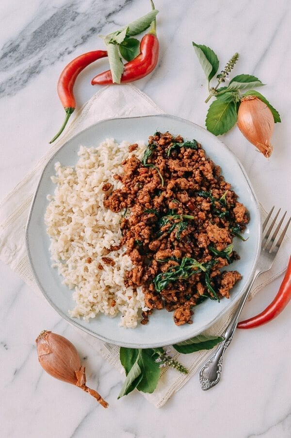

Pork & Holy Basil Stir-Fry (Pad Kra Pao)

This pad kra pao (pork & holy basil-stir-fry) features a key ingredient: holy basil! With jasmine rice, it's
perfection. And it only takes minutes to make.
Many thanks to The Woks of Life for the recipe picture, ingredients list, and instructions.
You can find their Pad Kra Pao recipe here.
INGREDIENTS:
- 3 tablespoons vegetable oil
- 2 shallots (thinly sliced)
- 7 cloves garlic (sliced)
- 3 Thai bird or holland chilies (de-seeded, if desired, and thinly sliced)
- 1 pound ground pork (450g)
- 1 teaspoon sugar
- 1 tablespoon fish sauce
- 1 tablespoon thin/light soy sauce
- 2 teaspoons dark soy sauce
- 2 teaspoons oyster sauce
- ⅓ cup low sodium chicken broth or water
- Holy basil leaves (about 1 1/2 cups packed)
INSTRUCTIONS:
- In a wok over medium high heat, add the oil, shallots and garlic, and fry for 3 minutes. Add the chilies and
cook for another minute. Crank up the heat to high, and add the ground pork, breaking it up into small bits
and allowing it to crisp up.
- Add the sugar, fish sauce, soy sauce, dark soy sauce, and oyster sauce. Stir-fry for another minute and
deglaze the pan with the broth or water. Because your pan is over high heat, the liquid should cook off very
quickly. Add the basil, and stir-fry until wilted. Serve over rice.
Click here to go back home